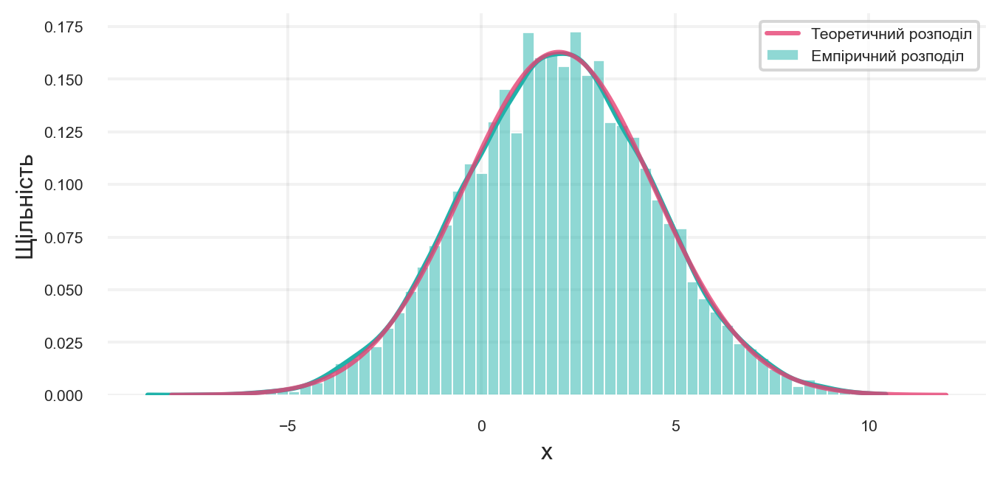
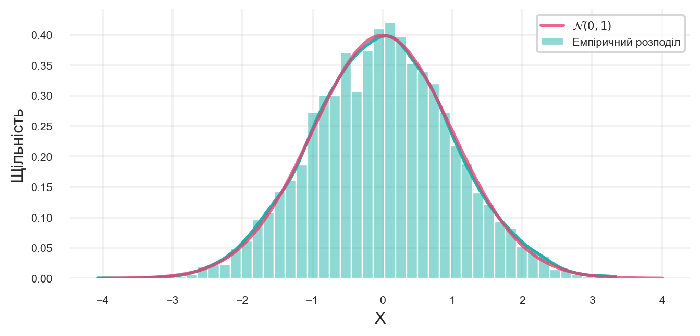
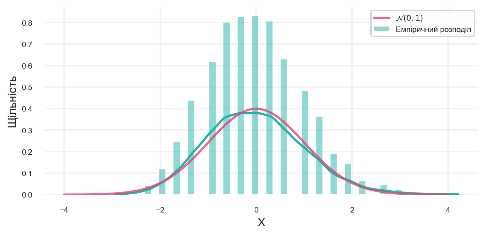
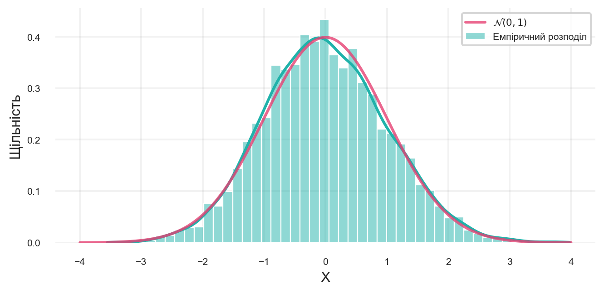
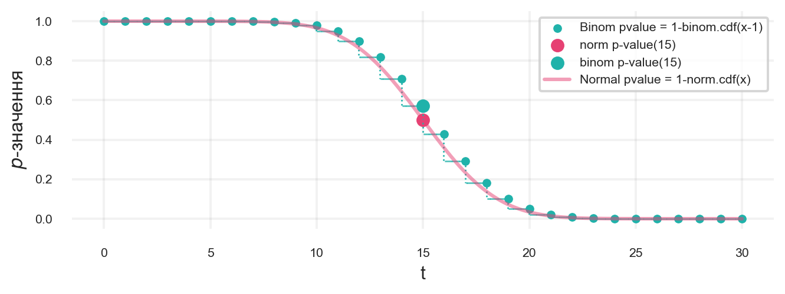

У цьому розділі ми розглянемо \(Z\)-критерій Фішера, який використовується для перевірки гіпотез про середнє значення генеральної сукупності з відомою дисперсією.
Далі, для виведення критеріїв нам потрібен нормальний розподіл. Потому що саме цьому розподілу підпорядковується середнє вибірок. Тож давайте подивимося, що це взагалі таке, як з ним працювати в Python й які в нього є властивості.
3.1 Нормальний розподіл
Нормальний розподіл \(\mathcal{N}(\mu, \sigma^2)\) — неперервний розподіл, у якому щільність спадає зі збільшенням відстані від математичного сподівання \(\mu\) за швидкістю, пропорційною квадрату відстані (див. формулу 3.1).
Побудова графіка нормального розподілу з різними параметрами \(\mu\) та \(\sigma^2\).
Рисунок 3.1: Нормальний розподіл з різними параметрами
3.2 Нормальний розподіл у Python
Нехай ми хочемо задати розподіл \(\mathcal{N}(\mu, \sigma^2)\). Для цього є клас norm1.
Параметри класу:
loc — це \(\mu\)
scale — це \(\sigma\), або стандартне відхилення. Не дисперсія!
Методи класу:
rvs() — згенерувати випадкові числа з розподілу \(\mathcal{N}(\mu, \sigma^2)\)
cdf(x) — кумулятивна функція розподілу (cumulative distribution function, CDF) в точці \(x\), ймовірність того, що випадкова величина \(X\) менша або дорівнює \(x\).
ppf(q) — квантиль функції розподілу (percent-point function, PPF) для ймовірності \(q\), ймовірність того, що випадкова величина \(X\) менша або дорівнює \(q\).
pdf(x) — щільність ймовірності (probability density function, PDF) в точці \(x\), ймовірність того, що випадкова величина \(X\) дорівнює \(x\).
CDF та PPF — це функції, які пов’язані між собою. CDF визначає ймовірність того, що випадкова величина \(X\) менша або дорівнює \(x\), а PPF визначає значення \(x\), для якого ймовірність \(X\) менша або дорівнює \(q\).
Ініціалізуємо клас norm з параметрами \(\mu = 0\) та \(\sigma = 1\) (стандартний нормальний розподіл). Далі, згенеруємо випадкову вибірку з 50 спостережень, а також обчислимо PDF, CDF та PPF для \(x = 1.5\).
Ініціалізація класу norm з параметрами \(\mu = 0\) та \(\sigma = 1\).
2
Генерація випадкової вибірки з 50 спостережень.
3
Обчислення PDF для \(x = 1.5\).
4
Обчислення CDF для \(x = 1.5\).
5
Обчислення PPF для \(q = 0.933\).
6
Виведення результатів.
\(P(X \leq 1.5) = 0.933\)
\(f(1.5) = 0.130\)
\(z_{0.933} = \Phi^{-1}(0.933) = 1.499\)
Візуалізація методів класу norm показана на рисунку 3.2.
Рисунок 3.2: Демонстрація методів класу norm
3.3 Властивості нормального розподілу
Нормальний розподіл має кілька важливих властивостей2:
Сума двох незалежних нормально розподілених випадкових величин також має нормальний розподіл:
\[
\begin{aligned}
\xi_1 &\sim \mathcal{N}(\mu_1, \sigma_1^2) \\
\xi_2 &\sim \mathcal{N}(\mu_2, \sigma_2^2) \\
\xi_1 + \xi_2 &\sim \mathcal{N}(\mu_1 + \mu_2, \sigma_1^2 + \sigma_2^2)
\end{aligned}
\tag{3.2}\] де \(\xi_1\) та \(\xi_2\) — незалежні нормально розподілені випадкові величини з параметрами \(\mu_1\), \(\sigma_1^2\) та \(\mu_2\), \(\sigma_2^2\) відповідно.
Множення нормально розподіленої випадкової величини на константу також дає нормально розподілену величину:
\[
a \xi_1 \sim \mathcal{N}(a\mu_1, a^2\sigma_1^2)
\tag{3.3}\] де \(a\) — константа, \(\xi_1\) — нормально розподілена випадкова величина з параметрами \(\mu_1\), \(\sigma_1^2\).
3.3.1 Перевірка властивостей в Python
За допомогою мови Python ми можемо перевірити ці властивості. Почнемо з Рівняння 3.2. Для цього ми згенеруємо дві нормально розподілені випадкові величини \(\xi_1\) та \(\xi_2\) з параметрами \(\mu_1 = 0\), \(\sigma_1^2 = 1\) та \(\mu_2 = 1\), \(\sigma_2^2 = 4\). Потім, ми обчислимо їхню суму та перевіримо, чи має вона нормальний розподіл з параметрами \(\mu_1 + \mu_2\) та \(\sigma_1^2 + \sigma_2^2\).
Генерація нормально розподілених випадкових величин \(\xi_1\) та \(\xi_2\).
5
Сума двох нормально розподілених випадкових величин.
6
Параметри суми \(\xi_1 + \xi_2\).
7
Стандартне відхилення суми \(\xi_1 + \xi_2\).
8
Емпіричний розподіл суми \(\xi_1 + \xi_2\).
9
Теоретичний розподіл суми \(\xi_1 + \xi_2\).

Рисунок 3.3: Перевірка властивостей нормального розподілу
Видно, що розподіли приблизно збіглися! А значить ми переконалися, що формула правильна.
Другу властивість Рівняння 3.3 можна перевірити аналогічно. Для цього ми згенеруємо нормально розподілену випадкову величину \(\xi_1\) з параметрами \(\mu_1 = 0\), \(\sigma_1^2 = 1\) та помножимо її на константу \(a = 2\). Потім, ми перевіримо, чи має вона нормальний розподіл з параметрами \(a\mu_1\) та \(a^2\sigma_1^2\).
Випадкові величини можуть бути слабко залежні одна від одної й злегка по-різному розподілені. Центральна гранична теорема все ще буде правильною, Gnedenko and Kolmogorov (2021).
3.4.1 Візуалізація ЦГТ
Щоб краще розуміти, як працює ЦГТ, я пропоную візуалізувати теорему: подивимося на розподіл середніх значень у різних вибірках. Як ми це зробимо?
Щоб подивитися, що деяка випадкова величина з нормального розподілу, нам потрібна вибірка цих випадкових величин.
У цьому випадку нам потрібна вибірка статистик із ЦГТ. Тому нам потрібно згенерувати \(N\) вибірок по \(M\) елементів у кожній.
По кожній вибірці треба порахувати середнє за \(M\) елементами.
У підсумку ми отримаємо вибірку з \(N\) елементів.
Візуалізація емпіричного розподілу та теоретичного розподілу.
Тепер, давайте подивимося на біноміальний розподіл. Для цього ми згенеруємо вибірку з \(N\) елементів з біноміального розподілу з параметрами \(n = 20\) та \(p = 0.01\). Потім, ми обчислимо середнє за \(M\) елементами.
p =0.01n =20size =50001visualize_CLT(lambda: np.random.binomial(n, p, size),2 expected_value = p * n,3 variance = n * p * (1- p))
1
Генерація вибірки з біноміального розподілу.
2
Математичне сподівання біноміального розподілу.
3
Дисперсія біноміального розподілу.

Рисунок 3.5: Візуалізація ЦГТ при великій вибірці з біноміального розподілу.
Емпірична щільність достатньо близько збігається з теоретичним розподілом.
А що якщо зменшити вибірку, за якою рахується середнє? Для цього ми зменшимо \(n\) до 20, а \(p\) до 0.05. Тепер, ми згенеруємо вибірку з \(N\) елементів з біноміального розподілу з параметрами \(n = 20\) та \(p = 0.05\). Потім, ми обчислимо середнє за \(M\) елементами.
p =0.05n =20size =10visualize_CLT(lambda: np.random.binomial(n, p, size), expected_value = p * n, variance = n * p * (1- p))

Рисунок 3.6: Візуалізація ЦГТ при маленькій вибірці з біноміального розподілу.
Стало значно гірше: з’явилися прогалини в розподілі, та й сама емпірична функція розподілу зміщена. Тож наш експеримент підтвердив важливість розміру вибірки для коректної роботи ЦГТ. Це означає, що якщо ми хочемо використовувати ЦГТ, то вибірка має бути досить великою. В іншому випадку, результати можуть бути ненадійними.
Тепер подивимось на експоненціальний розподіл. Для цього ми згенеруємо вибірку з \(N\) елементів з експоненціального розподілу з параметром \(\lambda = 5\). Потім, ми обчислимо середнє за \(M\) елементами.
Математичне сподівання експоненціального розподілу задається як \(1/\lambda\).
5
Дисперсія експоненціального розподілу задається як \(1/\lambda^2\).

Рисунок 3.7: Візуалізація ЦГТ при великій вибірці з експоненціального розподілу.
Бачимо, що і тут усе добре працює!
3.4.2 Інші формулювання ЦГТ
Наступні формулювання є еквівалентними, тому що ми можемо перетворити одне в інше за допомогою простих алгебраїчних перетворень. Вони можуть бути корисними в різних ситуаціях, залежно від того, що ми хочемо перевірити.
3.5 Нормальна апроксимація й застосування \(Z\)-критерію
3.5.1 Апроксимація нормальним розподілом
Згадайте задачу на самому початку розділу 1.1. У нас є вибірка користувачів \(X_1,\ X_2,\ ...,\ X_n,\ X_i \sim \text{Bernoulli}(\mu)\) з параметром \(\mu\), й ми хочемо перевірити гіпотезу:
\[
H_0: \mu =\mu_0 = 0.5\ \text{проти} \ H_1: \mu > 0.5
\] де \(\mu_0\) — гіпотетичне значення параметра \(\mu\).
Раніше, ми вирішували цю задачу через біноміальний розподіл:
\(T(X^n) = \underset{i=1}{\overset{n}{\sum}} X_i,\ T \overset{H_0}{\sim} \text{Binom} (n, \mu_0)\)
При цьому цього разу ми дивимося статистику не в точці \(t-1\), як робили раніше, а в точці \(t\), оскільки у нас неперервний розподіл, то нам не потрібно віднімати 1:
у разі нормального розподілу: \(P(T(X^n) \geq t) = P(T(X^n) > t) = 1 - P(T(X^n) \leq t)\);
у разі біноміального розподілу: \(P(T(X^n) \geq t) = 1 - P(T(X^n) \leq t - 1)\).
Подивимось, як це виглядає в Python. Для цього створимо функцію get_pvalue_by_normal_approx, яка буде приймати на вхід параметри \(n\), \(\mu_0\), \(t\) та повертати \(p\)-значення. Порівняємо результати за точним біноміальним тестом та нашим наближенням.
def get_pvalue_by_normal_approx(t, n, mu_0):""" Функція для обчислення p-значення за нормальною апроксимацією t: реалізація статистики n: кількість спостережень mu_0: гіпотетичне значення параметра mu """1 mu = n * mu_02 sigma = np.sqrt(n * mu_0 * (1- mu_0))3return1- norm(loc=mu, scale=sigma).cdf(t)4n =305mu_0 =0.56t =197p_value = get_pvalue_by_normal_approx(t, n, mu_0)p_value = binomtest(t, n, mu_0, alternative='greater').pvalue8print(f"p-значення за нормальною апроксимацією = {p_value:.4f}")9print(f"p-значення за точним біноміальним тестом = {p_value:.4f}")
1
Математичне сподівання біноміального розподілу.
2
Стандартне відхилення.
3
Обчислення \(p\)-значення.
4
Кількість спостережень.
5
Гіпотетичне значення параметра \(\mu\).
6
Реалізація статистики.
7
Обчислення \(p\)-значення.
8
Виведення \(p\)-значення.
9
Виведення точного \(p\)-значення.
p-значення за нормальною апроксимацією = 0.1002
p-значення за точним біноміальним тестом = 0.1002
Ми бачимо, що значення не дуже-то й збіглися. Але, як ми пам’ятаємо, нормальна апроксимація працює тільки з деякого великого \(n\). Тому давайте спробуємо повторити експеримент із більшаимо кількість спостережень.
n =3000mu_0 =0.5t =1544p_value = get_pvalue_by_normal_approx(t, n, mu_0)p_value = binomtest(t, n, mu_0, alternative='greater').pvalueprint(f"p-значення за нормальною апроксимацією = {p_value:.4f}")print(f"p-значення за точним біноміальним тестом = {p_value:.4f}")
p-значення за нормальною апроксимацією = 0.0561
p-значення за точним біноміальним тестом = 0.0561
Ми бачимо, що відмінність тепер тільки в 3 знаку після коми, а не в другому, як раніше. Що більше ми братимемо вибірку, то меншою буде помилка про що говорить ЦГТ.
3.5.2\(Z\)-критерій Фішера
\(Z\)-критерій Фішера використовується для перевірки гіпотез про математичне сподівання випадкової величини з відомою дисперсією. Він є одним із найпоширеніших критеріїв у статистиці, оскільки дозволяє оцінити, чи є різниця між середніми значеннями двох груп статистично значущою.
Для двостороннього критерію ми можемо використовувати \(Z\)-критерій Фішера, але з урахуванням того, що ми перевіряємо гіпотезу про те, що \(\mu\) не дорівнює \(\mu_0\). Тобто, ми хочемо перевірити, чи є різниця між середніми значеннями двох груп статистично значущою в обидва боки.
Нульова та альтернативна гіпотези для двостороннього \(Z\)-критерію Фішера мають вигляд:
\[
H_0: \mu = \mu_0 \quad \text{проти} \quad H_1: \mu \neq \mu_0
\tag{3.6}\] де \(\mu_0\) — гіпотетичне значення параметра \(\mu\).
Статистика \(Z\)-критерію Фішера має вигляд:
\[
Z = \dfrac{\overline X - \mu_0}{\sigma / \sqrt{n}}
\tag{3.7}\] де \(\overline X\) — середнє арифметичне вибірки, \(\sigma\) — відома дисперсія генеральної сукупності, \(n\) — кількість спостережень.
При достатньо великій вибірці згідно ЦГТ \(Z\)-критерій Фішера має нормальний розподіл:
Односторонній критерій перевіряє гіпотезу про те, що \(\mu\) більше або менше \(\mu_0\). Нульова та альтернативна гіпотези для одностороннього \(Z\)-критерію Фішера мають вигляд:
Тоді односторонній \(Z\)-критерій Фішера має вигляд:
\[
P_{H_0}(Z(X) \geq z) = 1 - P_{H_0}(Z(X) < z) = 1 - \Phi(z) = \alpha
\tag{3.12}\] де \(\Phi(z)\) — функція розподілу стандартного нормального розподілу, \(\alpha\) — рівень значущості, \(z\) — реалізація статистики \(Z\)-критерію Фішера.
3.6\(Z\)-критерій Фішера в Python
Напишемо функцію z_test_pvalue, яка буде приймати на вхід параметри sample_mean (середнє арифметичне вибірки), sample_size (кількість спостережень), population_mean (гіпотетичне значення параметра \(\mu\)), population_variance (дисперсія генеральної сукупності) та alternative (альтернативна гіпотеза). Функція буде повертати \(p\)-значення для двостороннього або одностороннього \(Z\)-критерію Фішера.
def z_test_pvalue( sample_mean, sample_size, population_mean, population_variance, alternative='two-sided'):""" Функція для обчислення p-значення за Z-критерієм Фішера sample_mean: середнє арифметичне вибірки sample_size: кількість спостережень population_mean: гіпотетичне значення параметра mu population_variance: дисперсія генеральної сукупності alternative: альтернативна гіпотеза """ standard_error = np.sqrt(population_variance) / np.sqrt(sample_size)1 z = (sample_mean - population_mean) / standard_error2if alternative =='two-sided':3 p_value =2*min(norm.cdf(z), 1- norm.cdf(z))4elif alternative =='greater':5 p_value =1- norm.cdf(z)6elif alternative =='less':7 p_value = norm.cdf(z)else:8raiseValueError("Оберіть одну з альтернатив: ['two-sided', 'greater', 'less']")9return p_value
1
Обчислення статистики \(Z\)-критерію Фішера.
2
Перевірка двосторонньої гіпотези.
3
Обчислення \(p\)-значення для двостороннього \(Z\)-критерію Фішера.
4
Перевірка правосторонньої гіпотези.
5
Обчислення \(p\)-значення для правостороннього \(Z\)-критерію Фішера.
6
Перевірка лівосторонньої гіпотези.
7
Обчислення \(p\)-значення для лівостороннього \(Z\)-критерію Фішера.
8
Виклик помилки, якщо альтернативна гіпотеза не відповідає жодній з можливих.
9
Повернення \(p\)-значення.
Тепер ми можемо перевірити гіпотезу про те, що \(\mu\) не дорівнює \(\mu_0\), за допомогою \(Z\)-критерію Фішера. Для цього ми можемо використати функцію z_test_pvalue та порівняємо з результатами, які ми отримали раніше за допомогою біноміального тесту та нормальної апроксимації.
n =30mu_0 =0.5t =191sample_mean = t / n2population_variance = mu_0 * (1- mu_0)p_value = z_test_pvalue(sample_mean, n, mu_0, population_variance, alternative='greater')print(f"p-значення за Z-критерієм Фішера = {p_value:.4f}")print(f"p-значення за нормальною апроксимацією = {get_pvalue_by_normal_approx(t, n, mu_0):.4f}")print(f"p-значення за точним біноміальним тестом = {binomtest(t, n, mu_0, alternative='greater').pvalue:.4f}")
1
Обчислення математичного сподівання вибірки.
2
Дисперсія генеральної сукупності.
p-значення за Z-критерієм Фішера = 0.0721
p-значення за нормальною апроксимацією = 0.0721
p-значення за точним біноміальним тестом = 0.1002
Ми бачимо, що \(p\)-значення за \(Z\)-критерієм Фішера та нормальною апроксимацією збігаються, а точний біноміальний тест дає трохи інше значення. Залишається питання: чи можна уточнити результати \(Z\)-тесту при малих вибірках? Відповідь: так, можна. Для цього існує поправка на неперервність, яка дозволяє покращити точність апроксимації і її ми розглянемо далі.
3.7 Поправка на неперервність
Задля кращого розуміння, давайте спочатку візуалізуємо \(p\)-значення в залежності від величини успіхів експерименту \(t\) для біноміального тесту та \(Z\)-критерію Фішера. Для цього побудуємо три варіанти:
\(p\)-значення за нормальною апроксимацією.
Розрахунок в Python: 1 - norm.cdf(t).
\(p\)-значення біноміального тесту за умови, що \(t\) — неціле число.
Розглянемо на прикладі \(t = 19.5\), тоді \(p\)-значення буде дорівнювати \[\begin{aligned}P(T(X) \geq t) &= P(T(X) \geq 19.5) \\ &= 1 - P(T(X) < 19.5) \end{aligned}\]
Розрахунок в Python: 1 - binom.cdf(t, n, mu_0).
\(p\)-значення біноміального тесту за умови, що \(t\) — ціле число.
Розглянемо на прикладі \(t = 19\), тоді \(p\)-значення буде дорівнювати \[\begin{aligned}P(T(X) \geq t) &= P(T(X) \geq 19) \\ &= 1 - P(T(X) \leq 18)\end{aligned}\]
Розрахунок в Python: 1 - binom.cdf(t - 1, n, mu_0).
Додатковий доданок до \(x\)-координати (про нього ми поговоримо пізніше).
2
Параметри нормального розподілу.
3
Створення біноміального та нормального розподілів.
4
\(p\)-значення біноміального розподілу.
5
\(p\)-значення нормального розподілу.
6
\(p\)-значення біноміального розподілу у точці \(t\).
7
\(p\)-значення нормального розподілу у точці \(t\).
Тепер ми можемо порівняти \(p\)-значення біноміального та нормального розподілів. Для цього викличемо функцію cmp_pvalue_binom_and_norm з параметрами \(n\), \(\mu_0\), \(t\).
n =30mu_0 =0.5t =15fig, ax = plt.subplots(figsize=(8, 2.5))cmp_pvalue_binom_and_norm(n, mu_0, t)

Порівняння p-значення біноміального та нормального розподілів
Якщо порівняти різницю між \(p\)-значеннями біноміального та нормального розподілів, то ми отримаємо, що \(p\)-значення біноміального розподілу завжди більше за \(p\)-значення нормального розподілу. При цьому із збільшенням вибірки ця різниця зменшується. Давайте подивимось на ці різниці для різних значень \(t\).
Для початку візьмемо \(n = 20\) та \(t = 10\).
n =20t =10mu_0 =0.51binom_pvalue =1- binom(n, mu_0).cdf(t -1)2norm_pvalue =1- norm(loc=n * mu_0, scale=np.sqrt(n * mu_0 * (1- mu_0))).cdf(t)3diff = binom_pvalue - norm_pvalueprint(f"p-значення біноміального розподілу = {binom_pvalue:.4f}")print(f"p-значення нормального розподілу = {norm_pvalue:.4f}")print(f"Різниця між p-значеннями = {diff:.4f}")
1
\(p\)-значення біноміального розподілу.
2
\(p\)-значення нормального розподілу.
3
Різниця між \(p\)-значеннями.
p-значення біноміального розподілу = 0.5881
p-значення нормального розподілу = 0.5000
Різниця між p-значеннями = 0.0881
Тепер візьмемо \(n = 20\) та \(t = 16\).
n =20t =16mu_0 =0.5binom_pvalue =1- binom(n, mu_0).cdf(t -1)norm_pvalue =1- norm(loc=n * mu_0, scale=np.sqrt(n * mu_0 * (1- mu_0))).cdf(t)diff = binom_pvalue - norm_pvalueprint(f"p-значення біноміального розподілу = {binom_pvalue:.4f}")print(f"p-значення нормального розподілу = {norm_pvalue:.4f}")print(f"Різниця між p-значеннями = {diff:.4f}")
p-значення біноміального розподілу = 0.0059
p-значення нормального розподілу = 0.0036
Різниця між p-значеннями = 0.0023
І накінці візьмемо \(n = 200\) та \(t = 100\).
n =200t =100mu_0 =0.5binom_pvalue =1- binom(n, mu_0).cdf(t -1)norm_pvalue =1- norm(loc=n * mu_0, scale=np.sqrt(n * mu_0 * (1- mu_0))).cdf(t)diff = binom_pvalue - norm_pvalueprint(f"p-значення біноміального розподілу = {binom_pvalue:.4f}")print(f"p-значення нормального розподілу = {norm_pvalue:.4f}")print(f"Різниця між p-значеннями = {diff:.4f}")
p-значення біноміального розподілу = 0.5282
p-значення нормального розподілу = 0.5000
Різниця між p-значеннями = 0.0282
Ми бачимо, що з ростом вибірки різниця між \(p\)-значеннями біноміального та нормального розподілів зменшується. Але як зробити так, щоб два \(p\)-значення збіглися? Для цього слід звернути увагу на точки перетину двох ліній: біноміального та нормального розподілів. Зауважимо, що вони перетинаються приблизно на середині відрізка: між \(t-1\) та \(t\). Тому спробуємо “змістити” графік нормального розподілу на \(0.5\) праворуч.
Це означає, що ми повинні відняти \(0.5\) від \(x\)-координати точки перетину. Тобто, ми можемо використовувати поправку на неперервність, яка дозволяє покращити точність апроксимації. Тоді \(p\)-значення для біноміального розподілу буде дорівнювати:
\[
p\text{-значення} = 1 - \Phi(t - 0.5)
\tag{3.14}\] де \(\Phi(t - 0.5)\) — функція розподілу стандартного нормального розподілу.
Подивимось на графік з поправкою на неперервність.
Ми бачимо, що \(p\)-значення біноміального та нормального розподілів тепер збігаються.
Порівняємо \(p\)-значення біноміального та нормального розподілів з поправкою на неперервність.
n =30t =19mu_0 =0.5mu = n * mu_0sigma = np.sqrt(mu * (1- mu_0))normal = norm(loc=mu, scale=sigma)1binom_pvalue =1- binom(n, mu_0).cdf(t -1)2norm_pvalue =1- normal.cdf(t)3norm_pvalue_correct =1- normal.cdf(t -0.5)print(f"p (біном) = {binom_pvalue:.4f}")print(f"p (нормальне наближення) = {norm_pvalue:.4f}")print(f"p (з поправкою на неперервність) = {norm_pvalue_correct:.4f}")
1
\(p\)-значення біноміального розподілу.
2
\(p\)-значення нормального розподілу.
3
\(p\)-значення нормального розподілу з поправкою на неперервність.
p (біном) = 0.1002
p (нормальне наближення) = 0.0721
p (з поправкою на неперервність) = 0.1006
Ми бачимо, що \(p\)-значення біноміального та нормального розподілів з поправкою на неперервність тепер збігаються.
Додамо поправку на неперервність до нашої функції z_test_pvalue.
def z_test_pvalue( sample_mean, sample_size, population_mean, population_variance, alternative='two-sided', continuity_correction=False):""" Функція для обчислення p-значення за Z-критерієм Фішера з поправкою на неперервність sample_mean: середнє арифметичне вибірки sample_size: кількість спостережень population_mean: гіпотетичне значення параметра mu population_variance: дисперсія генеральної сукупності alternative: альтернативна гіпотеза continuity_correction: поправка на неперервність """if continuity_correction: sample_mean = (sample_mean * sample_size -0.5) / sample_size se = np.sqrt(population_variance) / np.sqrt(sample_size) z = (sample_mean - population_mean) / sematch alternative:case'two-sided': p_value =2*min(norm.cdf(z), 1- norm.cdf(z))case'greater': p_value =1- norm.cdf(z)case'less': p_value = norm.cdf(z)case _:raiseValueError("Оберіть альтернативу: ['two-sided', 'greater', 'less']")return p_value
Перевірка наявності поправки на неперервність.
Тепер ми можемо використовувати функцію z_test_pvalue з параметром continuity_correction=True, щоб отримати \(p\)-значення з поправкою на неперервність.
n =30t =19mu0 =0.5variance = mu0 * (1- mu0)p = z_test_pvalue( t / n, n, mu0, variance, alternative='greater', continuity_correction=True)print(f"p-значення (Z-критерій з поправкою) = {p:.4f}")
p-значення (Z-критерій з поправкою) = 0.1006
Чудово, тепер ми можемо використовувати \(Z\)-критерій Фішера з поправкою на неперервність для перевірки гіпотез про математичне сподівання випадкової величини з відомою дисперсією. Але що робити, якщо дисперсія невідома? Для цього існує \(t\)-критерій Стьюдента, який ми розглянемо далі.
3.8 Питання для самоперевірки
Загальне розуміння та Z-критерій
Яка основна мета використання \(Z\)-критерію Фішера? Для перевірки яких гіпотез він призначений?
Яка ключова вимога (припущення) щодо дисперсії генеральної сукупності для застосування \(Z\)-критерію?
Чому знання про нормальний розподіл є необхідним для розуміння та застосування \(Z\)-критерію?
Нормальний розподіл
Якими двома параметрами характеризується нормальний розподіл \(\mathcal{N}(\mu, \sigma^2)\)? Що кожен з них означає?
Напишіть формулу щільності ймовірності (PDF) для нормального розподілу.
У бібліотеці scipy.stats для класу norm, що означають параметри loc та scale? Як scale пов’язаний з дисперсією \(\sigma^2\)?
Поясніть своїми словами, що обчислюють методи .pdf(x), .cdf(x) та .ppf(q) для об’єкта norm?
Якщо \(\xi_1 \sim \mathcal{N}(\mu_1, \sigma_1^2)\) та \(\xi_2 \sim \mathcal{N}(\mu_2, \sigma_2^2)\) є незалежними, який розподіл матиме їх сума \(\xi_1 + \xi_2\)? Вкажіть параметри.
Якщо \(\xi \sim \mathcal{N}(\mu, \sigma^2)\) і \(a\) — константа, який розподіл матиме величина \(a \xi\)? Вкажіть параметри.
Центральна гранична теорема (ЦГТ)
Сформулюйте Центральну граничну теорему. Про розподіл якої величини вона говорить?
Які основні умови повинні виконуватися для випадкових величин \(\xi_1, ..., \xi_n\), щоб до них можна було застосувати ЦГТ?
Запишіть формулу статистики з ЦГТ, яка збігається до стандартного нормального розподілу \(\mathcal{N}(0, 1)\).
Чому ЦГТ є такою важливою в статистиці, особливо для перевірки гіпотез?
Чи обов’язково початкові дані мають бути нормально розподілені, щоб вибіркове середнє (при великому \(n\)) було приблизно нормально розподіленим? Поясніть.
Як розмір вибірки (\(n\)) впливає на якість апроксимації розподілу вибіркового середнього нормальним розподілом згідно з ЦГТ?
Нормальна апроксимація та застосування Z-критерію
Як ЦГТ дозволяє використовувати нормальний розподіл для наближеного обчислення ймовірностей для біноміального розподілу при великому \(n\)?
Яка формула для тестової статистики \(Z\) у \(Z\)-критерії Фішера? Поясніть кожну складову формули.
Який теоретичний розподіл має статистика \(Z\) за умови істинності нульової гіпотези \(H_0: \mu = \mu_0\)?
Як обчислити \(p\)-значення для двостороннього\(Z\)-критерію (\(H_1: \mu \neq \mu_0\)), знаючи реалізацію статистики \(z\)?
Як обчислити \(p\)-значення для правостороннього\(Z\)-критерію (\(H_1: \mu > \mu_0\)), знаючи реалізацію статистики \(z\)?
Порівняйте \(Z\)-критерій (де статистика базується на \(\overline{X}\)) та нормальну апроксимацію біноміального розподілу (де статистика базується на сумі \(\sum X_i\)). Чи є вони по суті еквівалентними? Чому?
Поправка на неперервність
У яких ситуаціях виникає потреба у поправці на неперервність? Яку проблему вона допомагає вирішити?
Як зазвичай застосовується поправка на неперервність при обчисленні \(P(T \ge t)\) за допомогою нормального розподілу, де \(T\) — дискретна випадкова величина (наприклад, біноміальна)? (Наприклад, як змінюється значення \(t\) у формулі?)
Як функція z_test_pvalue (у її покращеній версії) враховує поправку на неперервність?
Підсумкові питання
За яких умов ви б віддали перевагу точному біноміальному тесту перед Z-критерієм (з або без поправки) для аналізу даних типу успіх/невдача (Bernoulli)?
Яке основне обмеження \(Z\)-критерію, згадане наприкінці розділу, мотивує перехід до \(t\)-критерію Стьюдента?
Agresti, Alan. 2012. Categorical Data Analysis. 3rd ed. Wiley.
———. 2018. An Introduction to Categorical Data Analysis. 3rd ed. Wiley.
Basu, D. 1955. On Statistics Independent of a Complete Sufficient Statistic. Sankhya. Vol. 15.
Bruce, Peter, Andrew Bruce, and Peter Gedeck. 2020. Practical Statistics for Data Scientists. 2nd ed. O’Reilly Media.
Casella, George, and Roger L. Berger. 2002. Statistical Inference. 2nd ed. Duxbury Press.
Cochran, William G. 1934. The Distribution of Quadratic Forms in a Normal System, with Applications to the Analysis of Covariance. Mathematical Proceedings of the Cambridge Philosophical Society. Vol. 30. 3. Cambridge University Press. https://doi.org/10.1017/S0305004100016595.
Cohen, Jacob. 1988. Statistical Power Analysis for the Behavioral Sciences. 2nd ed. Lawrence Erlbaum Associates.
Efron, Bradley, and Robert J. Tibshirani. 1993. An Introduction to the Bootstrap. Chapman; Hall/CRC.
Fisher, R. A. 1922. “On the Mathematical Foundations of Theoretical Statistics.”Philosophical Transactions of the Royal Society of London. Series A 222 (594-604): 309–68. https://doi.org/10.1098/rsta.1922.0009.
Freedman, David, Robert Pisani, and Roger Purves. 2007. Statistics. 4th ed. W. W. Norton & Company.
Gnedenko, Boris V., and Alexander N. Kolmogorov. 2021. Limit Distributions for Sums of Independent Random Variables. Martino Fine Books.
Grus, Joel. 2019. Data Science from Scratch: First Principles with Python. 2nd ed. O’Reilly Media.
Haslwanter, Thomas. 2016. An Introduction to Statistics with Python: With Applications in the Life Sciences. Springer.
Hogg, Robert V., Joseph W. McKean, and Allen T. Craig. 2018. Introduction to Mathematical Statistics. 8th ed. Pearson.
Hogg, Robert V., Elliott A. Tanis, and Dale L. Zimmerman. 2015. Probability and Statistical Inference. 9th ed. Pearson.
Lehmann, Erich L., and Joseph P. Romano. 2005. Testing Statistical Hypotheses. 3rd ed. Springer.
Lemons, Don S. 2002. An Introduction to Stochastic Processes in Physics. The Johns Hopkins University Press.
McKinney, Wes. 2022. Python for Data Analysis. 3rd ed. O’Reilly Media.
Montgomery, Douglas C. 2017. Design and Analysis of Experiments. 9th ed. Wiley.
Mood, Alexander M., Franklin A. Graybill, and Duane C. Boes. 1974. Introduction to the Theory of Statistics. 3rd ed. McGraw-Hill.
Newcombe, Robert G. 2012. Confidence Intervals for Proportions and Related Measures of Effect Size. Chapman; Hall/CRC.
Neyman, J., and E. S. Pearson. 1933. “On the Problem of the Most Efficient Tests of Statistical Hypotheses.”Philosophical Transactions of the Royal Society of London. Series A 231 (694-706): 289–337. https://doi.org/10.1098/rsta.1933.0009.
Wasserman, Larry. 2004. All of Statistics: A Concise Course in Statistical Inference. New York: Springer.
Welch, B. L. 1947. “The Generalization of ‘Student’s’ Problem When Several Different Population Variances Are Involved.”Biometrika 34 (1-2): 28–35. https://doi.org/10.1093/biomet/34.1-2.28.
Wilson, Edwin B. 1927. “Probable Inference, the Law of Succession, and Statistical Inference.”Journal of the American Statistical Association 22 (158): 209–12. https://doi.org/10.1080/01621459.1927.10502953.
Жлуктенко, В. І., and С. І. Наконечний. 2001. Теорія Ймовірностей і Математична Статистика: Навч.-Метод. Посібник. У 2 ч. Ч. II. Математична Статистика. Київ: КНЕУ.
Турчин, В. М. 2014. Теорія Ймовірностей і Математична Статистика. Основні Поняття, Приклади, Задачі. Дніпропетровськ: ІМА-прес.
Доведення цих властивостей можна знайти в роботі Lemons (2002).↩︎
Послідовність випадкових величин \(\xi_n\) збігається за розподілом до \(\xi\), позначаємо \(\xi_n \xrightarrow{d} \xi\), якщо \(\lim_{n \to \infty} F_{\xi_n}(x) = F_{\xi}(x)\) для всіх \(x\), в яких \(F_{\xi}(x)\) неперервна.↩︎